应用配管
问题的背景
依托镜像定义运行的Container，Pod，还需要解决如下问题：
- 不可变基础设施（容器）的可变配置
- 敏感信息的存储和使用（如秘密，Token）
- 集群中Pod自我的身份认证
- 容器的运行安全管控
- 容器启动前置条件校验
stateDiagram
资源配置 --> 容器
安全管控 --> 容器
前置校验 --> 容器
容器 --> 可变配置
容器 --> 铭感信息
容器 --> 身份认证
POD的配置管理
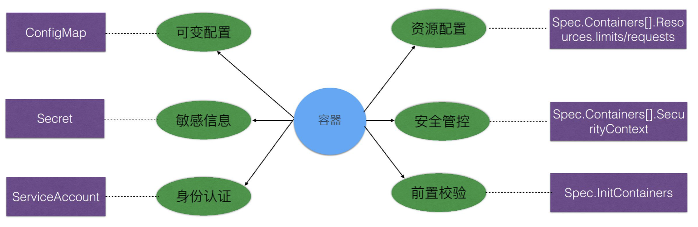
配置文件详解
ConfigMap
ConfigMap 介绍
管理容器运行所需要的： 配置文件 环境变量 命令行参数 用于解耦，容器镜像和可变配置 保障 工作负载的可移植性
apiVersion: v1
kind ConfigMap
metadata:
labels:
app: flannel
tier: node
name: kube-flannel-cfg
namespace: kube-system
data:
cni-conf.json: {
"name": "cbr0",
"type": "flannel",
"delegate": {
"isDefaultGateway": true
}
}
net-conf.json: {
"Network":"172.27.0.0/16",
"Backend": {
"Type": "vxlan"
}
}
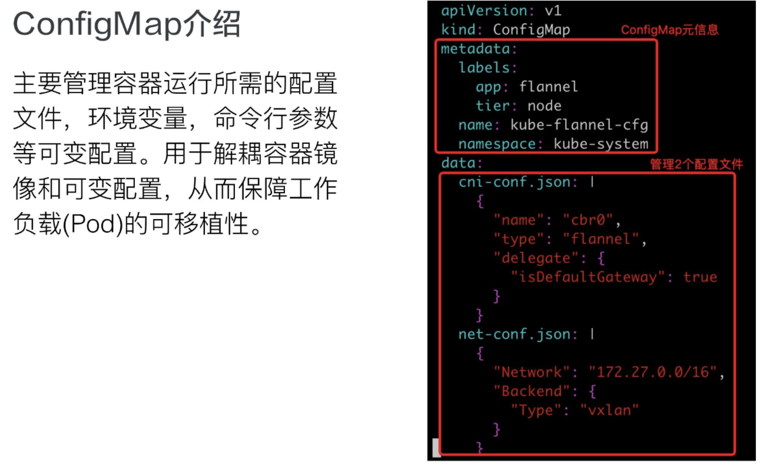
ConfigMap 创建
创建命令： kubectl create configmap [NAME][DATA]
kubectl create configmap kube-flannel-cfg --from-file=config-prod-container/configmap/cni-conf.json -n kube-system
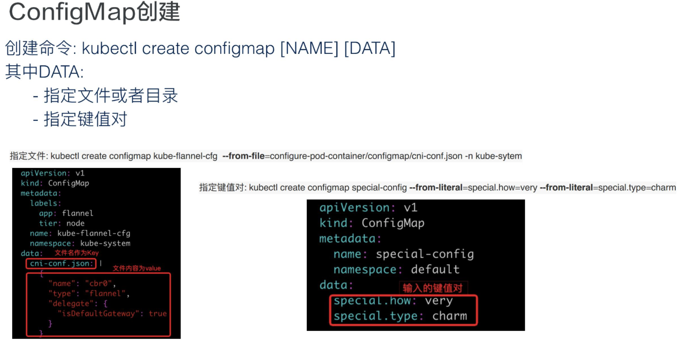
ConfigMap 使用
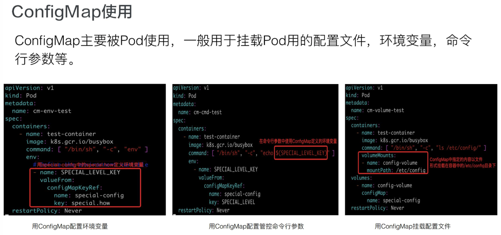
ConfigMap 使用的注意事项
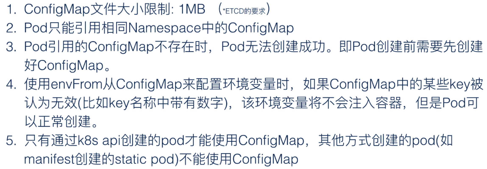
Secrete
Secrete 介绍
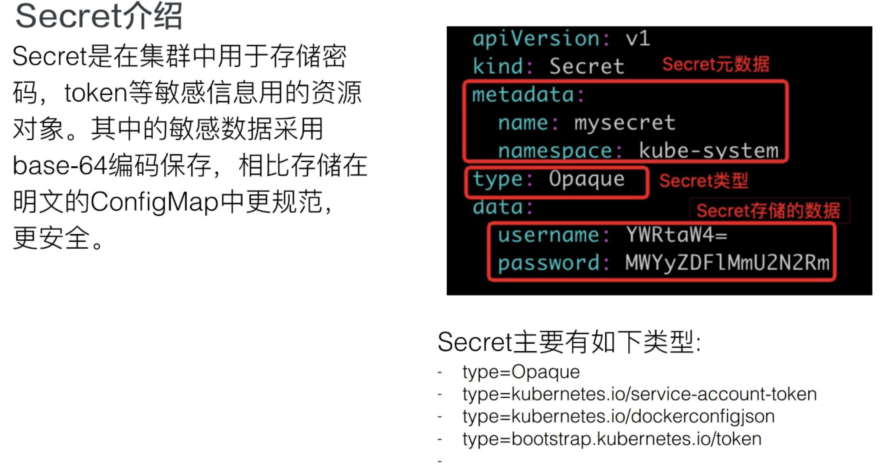
Secrete 创建
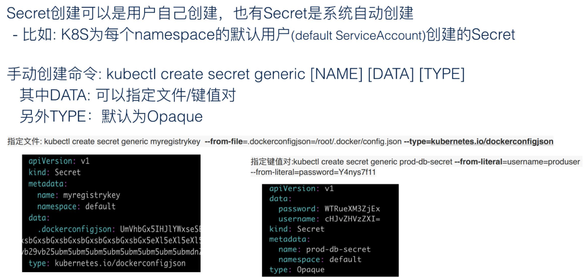
Secrete 使用
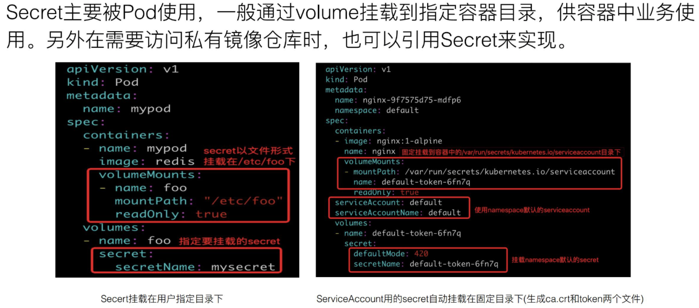
Secrete 注意事项
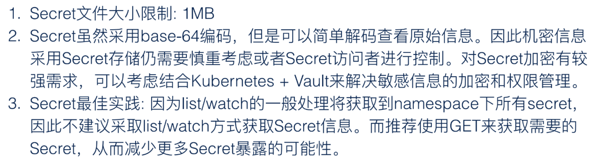
ServiceAccount
应用场景
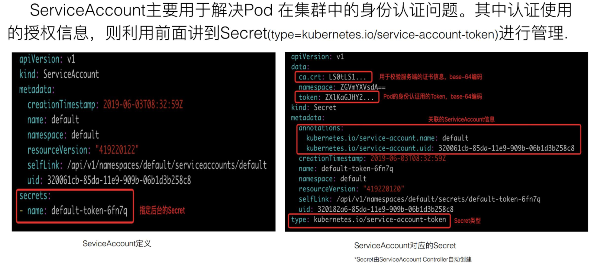
案例分析
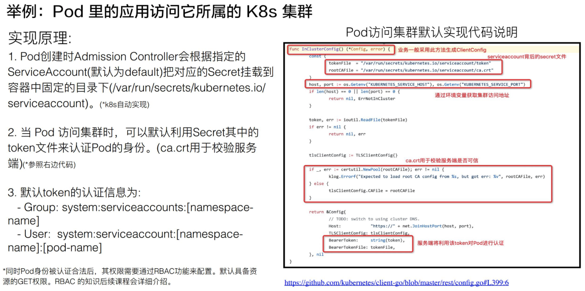
Resource
容器资源管理
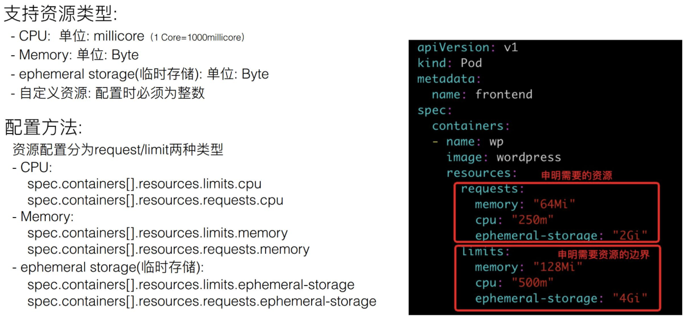
Pod(QoS)配置
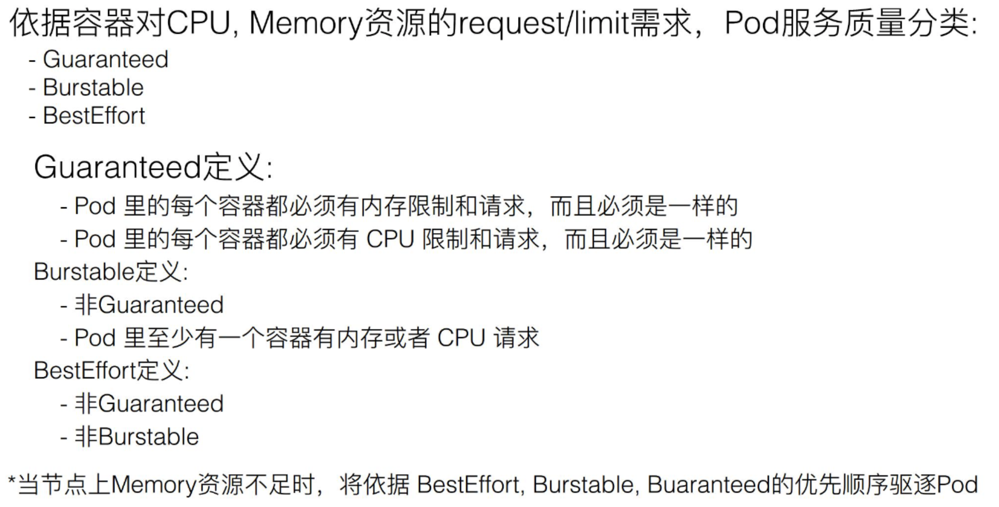
Security Context
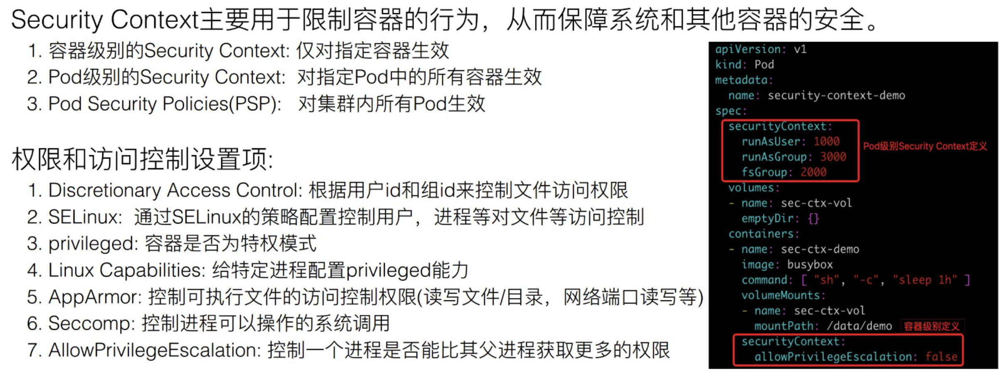
InitContainer
InitContainer介绍
InitContainer 和普通 container 的区别：
- InitContainer 首先会比普通 container 先启动，并且直到所有的 InitContainer 执行成功后，普通 container 才会被启动
- InitContainer 之间是按定义的次序去启动执行的，执行成功一个之后再执行第二个，而普通的 container 是并发启动的
- InitContainer 执行成功后就结束退出，而普通容器可能会一直在执行。它可能是一个 longtime 的，或者说失败了会重启，这个也是 InitContainer 和普通 container 不同的地方
InitContainer 用途
用于普通Container启动前的初始化(如配置文件准备)或普通Container启动的前置条件检验